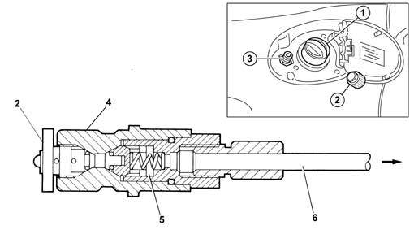
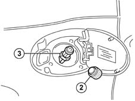
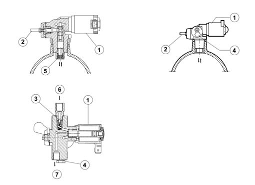
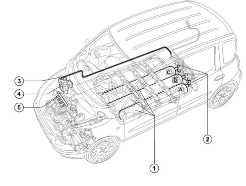
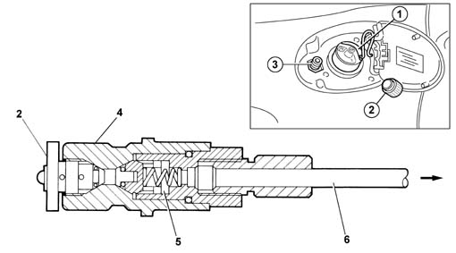
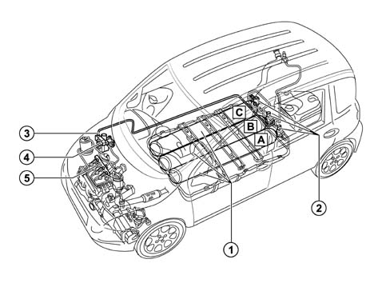

1042A METHANE GAS CANNISTER AND TUBES FOR RE-CHARGING
- Path
- Descriptions > 10 ENGINE UNIT > 1042 METHANE GAS CANNISTER AND TUBES > 1042A METHANE GAS CANNISTER AND TUBES FOR RE-CHARGING
- Kind
- system description
- Applies to
- engines: 1.6 16v; all production periods
- Interactive page
- https://sloeber94.github.io/elrnDB-fMltpl/en/#/2888247
Applies to: engines: 1.6 16v; production: da 09/03, fino a 05/04; only with equipment: Euro 3 and BIPOWER and BLUPOWER
View of assembly
A solenoid valve, on each canister, cuts off the flow methane to the supply system when the engine is not running.
The methane (or CNG) is stored, compressed at a pressure of 200 bar, in a series of canisters which are refilled through a special filler which has a single-acting valve.
A solenoid valve, on each canister, cuts off the flow of methane to the supply system when the engine is not running.
The methane at high pressure, passes through a pipe and reaches the two stage pressure reduction unit where the pressure is reduced to a constant value of 9 ± 1 bar.
The methane is directed from the pressure reduction unit to the methane distribution manifold to which the special injectors are connected, each of which injects the methane into the intake manifold for each cylinder, upstream of the inlet valves.
The specific components for the methane fuel system are:
- methane pressure sensor on high pressure line;
- methane injectors.
METHANE FILLER
The methane filler (3), protected by a cap (2), is located next to the fuel filler (1).
It is completed by a single-acting valve (5) in the actual filler casing (4) connected to the canisters by means of a high pressure pipe (6).

METHANE FILLER
The methane filler (3), protected by a cap (2), is located next to the fuel filler, not fitted.

METHANE CANISTERS
The methane in a gaseous state is compressed at a nominal operating pressure of 200 bar at 15°C, in the canisters fastened under the floor of the vehicle. After pressurizing, the methane inside the canister always remains in a gaseous state.
The canister is made entirely from steel (in accordance with regulations) and is subjected to a hydraulic test at a pressure of 300 bar and exceeds the impact and crash test legal requirements (in accordance with ECE 1024 and ECE 34).
VALVE ASSEMBLY ON CANISTER
The valve assembly consists of:
- 1, Normally closed type cut out solenoid valve (if it is not tensioned it prevents the methane flowing from the canister to the engine)
- 2, Manual cut out valve (tap which prevents the methane in the canister from escaping)
- 3, Single-acting valve (prevents the methane flowing from the solenoid valve to the filler)
- 4, Fuse tablet (melting temperature 110 ± 10°C: it allows the escape of methane from the canister in the case of fire)
- 5, Flow restricter (limits the flow of methane which escapes from the canister if the high pressure pipe breaks)
- 6, Valve assembly inlet connected, by means of a high pressure pipe, to the methane filler (allowing the intake of methane whilst the canister is refilling, but not the flow of methane on account of the presence of a single-acting valve).
- 7, Valve assembly outlet connected, by means of a high pressure pipe, to the pressure reduction unit in the engine compartment (allowing the exit of methane to supply the engine, intercepted by the solenoid valve)

Solenoid valve
The solenoid vlve (1a), fitted directly on the valve assembly, has the main task of managing the flow of methane coming out of the actual canister, shuttering the outlet duct from the valve assembly.
The intake duct, on the other hand, is fitted with a single-acting valve (3), which prevents the flow of methane from the canister to the filler (to increase safety, a second single-acting valve is fitted in the actual filler).
Each solenoid valve is electrically supplied by the ignition key by means of a special relay and is earthed via the inertia switch.
With the solenoid valve de-energized (engine switched off) the path towards the pressure reduction unit is closed and the methane can be refilled.
With the solenoid valve energized (ignition key in ON position) the path towards the pressure reduction unit is opened, placing the canister in contact with the engine fuel system.
The flow of methane towards the outside is prevented by the single-acting valve (3).
Manual cut out valve (tap)
The valve assembly is fitted with a manual methane cut out tap (2) located upstream of the solenoid valve (1). Opening/closing it either allows or prevents the exit or entry of methane from the canister and it is important for the maintenance of the system.
Single-acting valve
The single-acting valve (3) is fitted in the methane intake manifold for the valve assembly and is designed to prevent the flow of methane from the solenoid valve to the filler (to increase safety, a second single-acting valve is fitted in the actual filler).
Safety devices
To prevent excess pressure or fast draining of the canister, the valve assembly is equipped with the following safety devices:
- fuse tablet (4)
- flow restricter (5).
If, as a result of external causes, the temperature increases to above 110 10°C (for example, in the case of fire), the tablet (4) melts, causing the escape of the methane in the canister through a calibrated port, completely preventing the danger of excess pressure.
If one of the pipes of the valve assembly breaks (for example in the case of an impact) this would cause the escape of the excess methane (gas leak) and the flow restricter (5) would intervene limiting the flow of methane to around 0.5% in relation to the setting for normal operation, thereby preventing the danger stemming from the presence of a considerable methane flow rate.
The flow restricter is located on the valve assembly threaded shank in order to remain inside the canister guaranteeing operation even in the solenoid valve breaks due to impact.
The valve assembly is fitted directly on the canisters and has been designed to carry out the following functions:
- methane canister refilling
- engine supply
During refilling, the methane under pressure (200 bar), reaches the intake (6) and overcomes the single-acting valve (3).
With the engine switched off, the solenoid valve (1) is de-energized: the outlet (7) towards the engine is closed, whilst the passage (6) from the filler to the canister is open, allowing the refilling of the actual canister.
With the engine running on methane, the solenoid valve (1) is energized: the passage (7) from the canister to the pressure reduction unit is open, allowing the supply of the engine.

1, Methane cylinders
2, Solenoids on cylinders
3, Methane pipes
4, Methane pressure adaptor
5, Methane/injector manifold
CONSTRUCTION FEATURES
The methane (or CNG) is stored, compressed at a pressure of 200 bar, in a series of red cylinders which are refilled through a special filler fitted with a check valve.
A solenoid valve, on each cylinder, cuts off the flow of methane to the supply system when the engine is not running.
The methane at high pressure, passes through a pipe and reaches the two stage pressure reduction unit where the pressure is reduced to a constant value of 9 ± 1 bar.
The methane is directed from the pressure reduction unit to the methane distribution manifold to which the special injectors are connected, each of which injects the methane into the intake manifold for each cylinder, upstream of the inlet valves.
The specific components for the methane fuel system are:
- methane pressure sensor on high pressure line;
- methane injectors.
METHANE FILLER
The methane filler (3), protected by a cap (2), is located next to the fuel filler (1).
It is completed by a single-acting valve (5) in the actual filler casing (4) connected to the canisters by means of a high pressure pipe (6).

METHANE CYLINDERS
The methane in a gaseous state is compressed at a nominal operating pressure of 200 bar at 15°C, in the canisters fastened under the floor of the vehicle. After pressurizing, the methane inside the canister always remains in a gaseous state.
The canister is made entirely from steel (in accordance with regulations) and is subjected to a hydraulic test at a pressure of 300 bar and exceeds the impact and crash test legal requirements (in accordance with ECE 1024 and ECE 34).
VALVE ASSEMBLY ON CANISTER
The valve assembly consists of:
- Normally closed type cut out solenoid valve (if it is not activated, it prevents the methane flowing from the cylinder to the engine)
- Manual cut-out valve (2) (cock which prevents the methane in the cylinder from escaping)
- Check valve (3) (prevents the methane flowing from the solenoid valve to the filler)
- Fuse pad (4) (melting temperature 110 ± 10°C: it allows the escape of methane from the cylinder in the case of fire)
- Flow restricter (5) (limits the flow of methane which escapes from the cylinder if the high pressure pipe breaks)
- Valve assembly inlet (6) connected, by means of a high pressure pipe, to the methane filler (allowing the intake of methane whilst the cylinder is refilling, but not the flow of methane on account of the presence of a check valve).
- Valve assembly outlet (7) connected, by means of a high pressure pipe, to the pressure reduction unit in the engine compartment (allowing methane to come out to supply the engine, cut off by the solenoid valve)
SOLENOID
The solenoid valve (1a), fitted directly on the valve assembly, has the main task of managing the flow of methane coming out of the cylinder, shuttering the outlet duct from the valve assembly.
The intake duct, on the other hand, is fitted with a check valve (3), which prevents the flow of methane from the cylinder to the filler (to increase safety, a second check valve is fitted in the filler).
Each solenoid valve is electrically supplied by the ignition key by means of a specific relay and is earthed via the inertia switch.
With the solenoid valve de-energized (engine switched off) the path towards the pressure reduction unit is closed and the methane can be refilled.
With the solenoid valve energized (ignition key in ON position) the path towards the pressure reduction unit is opened, placing the cylinder in contact with the engine fuel system.
The flow of methane towards the outside is prevented by the check valve (3).
MANUAL CUT-OFF VALVE (COCK)
The valve assembly is fitted with a manual methane cut-out cock (2) located upstream of the solenoid valve (1). Opening/closing it either allows or prevents the exit or entry of methane from the cylinder and it is important for the maintenance of the system.
CHECK VALVE
The check valve (3) is fitted in the methane intake manifold for the valve assembly and is designed to prevent the flow of methane from the solenoid valve to the filler (to increase safety, a second check valve is fitted in the filler).
SAFETY DEVICES
To prevent excess pressure or fast draining of the canister, the valve assembly is equipped with the following safety devices:
- fuse tablet (4)
- flow restricter (5).
Fuse tablet
If, as a result of external causes, the temperature increases to above 110 ± 10°C (for example, in the case of fire), the tablet (4) melts, causing the escape of the methane in the canister through a calibrated port, completely preventing the danger of excess pressure.
Flow restricter
If one of the pipes of the valve assembly breaks (for example in the case of an impact) this would cause the escape of the excess methane (gas leak) and the flow restricter (5) would intervene limiting the flow of methane to around 0.5% in relation to the setting for normal operation, thereby preventing the danger stemming from the presence of a considerable methane flow rate.
The flow restricter is located on the valve assembly threaded shank in order to remain inside the canister guaranteeing operation even in the solenoid valve breaks due to impact.
OPERATION
The valve assembly is fitted directly on the cylinders and has been designed to carry out the following functions:
- methane cylinder refilling
- engine supply
Cylinder refilling
During refilling, the methane under pressure (200 bar), reaches the intake (6) and overcomes the check valve (3).
With the engine switched off, the solenoid valve (1) is de-energized: the outlet (7) towards the engine is closed, whilst the passage (6) from the filler to the cylinder is open, allowing the refilling of the cylinder.
Engine supply
With the engine running on methane, the solenoid valve (1) is energized: the passage (7) from the cylinder to the pressure reduction unit is open, allowing the supply to the engine.
.
1, Methane cylinders
2, Solenoids on cylinders
3, Methane pipes
4, Methane pressure adaptor
5, Methane/injector manifold
CONSTRUCTION FEATURES
The methane (or CNG) is stored, compressed at a pressure of 200 bar, in a series of red cylinders which are refilled through a special filler fitted with a check valve.
A solenoid valve, on each cylinder, cuts off the flow of methane to the supply system when the engine is not running.
The methane at high pressure, passes through a pipe and reaches the two stage pressure reduction unit where the pressure is reduced to a constant value of 9 ± 1 bar.
The methane is directed from the pressure reduction unit to the methane distribution manifold to which the special injectors are connected, each of which injects the methane into the intake manifold for each cylinder, upstream of the inlet valves.
The specific components for the methane fuel system are:
- methane pressure sensor on high pressure line;
- methane injectors.
METHANE FILLER
The methane filler (3), protected by a cap (2), is located next to the fuel filler (1).
It is completed by a single-acting valve (5) in the actual filler casing (4) connected to the canisters by means of a high pressure pipe (6).
METHANE CYLINDERS
The methane in a gaseous state is compressed at a nominal operating pressure of 200 bar at 15°C, in the canisters fastened under the floor of the vehicle. After pressurizing, the methane inside the canister always remains in a gaseous state.
The canister is made entirely from steel (in accordance with regulations) and is subjected to a hydraulic test at a pressure of 300 bar and exceeds the impact and crash test legal requirements (in accordance with ECE 1024 and ECE 34).
VALVE ASSEMBLY ON CANISTER
The valve assembly consists of:
- Normally closed type cut out solenoid valve (1) (if it is not activated, it prevents the methane flowing from the cylinder to the engine)
- Manual cut-out valve (2) (cock which prevents the methane in the cylinder from escaping)
- Check valve (3) (prevents the methane flowing from the solenoid valve to the filler)
- Fuse pad (4) (melting temperature 110 ± 10°C: it allows the escape of methane from the cylinder in the case of fire)
- Flow restricter (5) (limits the flow of methane which escapes from the cylinder if the high pressure pipe breaks)
- Valve assembly inlet (6) connected, by means of a high pressure pipe, to the methane filler (allowing the intake of methane whilst the cylinder is refilling, but not the flow of methane on account of the presence of a check valve).
- Valve assembly outlet (7) connected, by means of a high pressure pipe, to the pressure reduction unit in the engine compartment (allowing methane to come out to supply the engine, cut off by the solenoid valve)
SOLENOID
The solenoid valve (1a), fitted directly on the valve assembly, has the main task of managing the flow of methane coming out of the cylinder, shuttering the outlet duct from the valve assembly.
The intake duct, on the other hand, is fitted with a check valve (3), which prevents the flow of methane from the cylinder to the filler (to increase safety, a second check valve is fitted in the filler).
Each solenoid valve is electrically supplied by the ignition key by means of a specific relay and is earthed via the inertia switch.
With the solenoid valve de-energized (engine switched off) the path towards the pressure reduction unit is closed and the methane can be refilled.
With the solenoid valve energized (ignition key in ON position) the path towards the pressure reduction unit is opened, placing the cylinder in contact with the engine fuel system.
The flow of methane towards the outside is prevented by the check valve (3).
MANUAL CUT-OFF VALVE (COCK)
The valve assembly is fitted with a manual methane cut-out cock (2) located upstream of the solenoid valve (1). Opening/closing it either allows or prevents the exit or entry of methane from the cylinder and it is important for the maintenance of the system.
CHECK VALVE
The check valve (3) is fitted in the methane intake manifold for the valve assembly and is designed to prevent the flow of methane from the solenoid valve to the filler (to increase safety, a second check valve is fitted in the filler).
SAFETY DEVICES
To prevent excess pressure or fast draining of the canister, the valve assembly is equipped with the following safety devices:
- fuse tablet (4)
- flow restricter (5).
Fuse tablet
If, as a result of external causes, the temperature increases to above 110 ± 10°C (for example, in the case of fire), the tablet (4) melts, causing the escape of the methane in the canister through a calibrated port, completely preventing the danger of excess pressure.
Flow restricter
If one of the pipes of the valve assembly breaks (for example in the case of an impact) this would cause the escape of the excess methane (gas leak) and the flow restricter (5) would intervene limiting the flow of methane to around 0.5% in relation to the setting for normal operation, thereby preventing the danger stemming from the presence of a considerable methane flow rate.
The flow restricter is located on the valve assembly threaded shank in order to remain inside the canister guaranteeing operation even in the solenoid valve breaks due to impact.
OPERATION
The valve assembly is fitted directly on the cylinders and has been designed to carry out the following functions:
- methane cylinder refilling
- engine supply
Cylinder refilling
During refilling, the methane under pressure (200 bar), reaches the intake (6) and overcomes the check valve (3).
With the engine switched off, the solenoid valve (1) is de-energized: the outlet (7) towards the engine is closed, whilst the passage (6) from the filler to the canister is open, allowing the refilling of the actual canister.
Engine supply
With the engine running on methane, the solenoid valve (1) is energized: the passage (7) from the cylinder to the pressure reduction unit is open, allowing the supply to the engine.
Applies to: engines: 1.6 16v; production: da 06/04; only with equipment: BIPOWER

1, Methane canisters
2,- Solenoid valves on canisters
3, Methane pipes
4, Methane pressure reduction unit
5, Methane manifold with injectors
CONSTRUCTION SPECIFICATIONS
The methane (or CNG) is stored, compressed at a pressure of 200 bar, in a series of red coloured canisters that are filled by means of a special filler which has a one-way valve.
A solenoid valve, located on each canister, cuts off the flow of methane to the fuel supply system when the engine is not running.
The methane, at high pressure, reaches the single stage pressure reduction unit via a pipe where the pressure is reduced to a constant value of 10 ± 1 bar.
The methane is directed from the pressure reduction unit to the methane distribution manifold to which the special injectors are connected, each of which injects methane into the intake manifold of one cylinder, upstream of the inlet valves.
There is a methane pressure and temperarture sensor on the methane manifold that has the task of analyzing the methane temperature and pressure parameters upstream of the injectors to ensure a precise ratio between the air and fuel.
The specific methane fuel supply system components are:
- methane pressure sensor on the high pressure line;
- methane injectors;
- methane temperature sensor on the methane manifold.
MEHTANE FILLER
The methane filler (3) protected by a cap (2) is located next to the fuel filler (1).
It is completed by a one-way valve (5) fitted in the actual filler body (4) connected to the canisters by means of a high pressure pipe (6) and a second single-acting valve on the left canister.
Whilst the methane is being introduced this latter valve allows the flow of methane into the canisters. During the supply stage the single-acting valve prevents the gas from reaching the filler via the filler pipe leaving the passage towards the pressure reduction unit free.
METHANE CANISTERS
Methane in a gaseous state is compressed at a nominal operating pressure of 200 bar at 15°C in the canisters secured under the floor panel of the vehicle. When the pressurizing is completed, the methane inside the canister remains in a gaseous state.
The canister is made entirely from steel (in accordance with regulations) and is legally bound to have a hydraulic test at a pressure of 300 bar and meets all the standards governing impacts and crash tests (ECE 1024 and ECE 34).
VALVE ASSEMBLY ON CANISTER
The valve assembly consists of:
- A normally closed type cut out solenoid valve (1) (if it is not tensioned it prevents the methane flowing from the canister to the engine)
- Manual cut out valve (2) (tap which prevents the methane stored in the canister from escaping)
- Single-acting valve (3) on the left canister, (prevents the methane flowing from the solenoid valve to the filler)
- Meltable pad (4) (melting temperature 110 ± 10°C: allows the escape of methane from the canister in case of fire)
- Flow restricter (5) (restricts the flow of methane escaping from the canister if the high pressure pipe breaks)
- Intake (6) into the valve assembly connected bymeans of a high pressure pipe to the methane filler (allows the intake of methane during the canister filling stage but not the flow of methane because of the single-acting valve).
- Outlet (7) from the valve assembly connected by means of a high pressure pipe to the pressure reduction unit in the engine compartment (allows the exit of methane for supplying the engine and is intercepted by the solenoid valve)
SOLENOID VALVE
The solenoid valve (1) fitted directly on the valve assembly has the main function of managing the flow of methane coming out of the actual canister, intercepting the outlet duct from the valve assembly
The inlet duct, on the other hand, is fitted with a single-acting valve (3) on the left canister which prevents the flow of methane from the canister to the filler (for improved safety, a second single-acting valve is fitted on the filler itself).
Each solenoid valve is electrically supplied by the ignition via a special relay and is earthed through the inertia switch.
With the solenoid valve de-energized (engine switched off) the route towards the pressure reduction unit is closed and methane operation is possible.
With the solenoid valve energized (ignition key in ON position), the route to the pressure reduction unit is open placing the canister in contact with the engine fuel supply system.
The flow of methane towards the outside is prevented by the single-acting valve (3).
MANUAL CUT OUT VALVE (TAP)
The valve unit is equipped with a manual methane cut out tap (2) located upstream of the solenoid valve (1). Opening/closing it either allows or prevents the escape or intake of methane from the canister and it is important if any servicing operations are being carried out on the system.
SINGLE-ACTING VALVE
The single-acting valve (3) is fitted in the valve assembly methane inlet duct for the left canister and is designed to prevent the flow of methane from the solenoid valve to the filler (for improved safety, a second single-acting valve is fitted on the actual filler).
SAFETY DEVICES
In order to prevent excess pressure or the rapid draining of the canister, the valve unit is equipped with the following safety devices:
- meltable pad (4)
- flow restricter (5).
Meltable pad
If, as a result of outside forces, the temperature increases above 110 ± 10°C (for example, because of a fire), the pad melts, allowing the methane in the canister to escape via a calibrated port thereby completely eliminating the danger of excess pressure.
Flow restricter
If a pipe breaks or there is an escape of methane from the valve unit (for example, in the case of an impact), the flow restricter (5) intervenes by limiting the flow of methane to around 0.5% of the setting for normal engine operation, thereby preventing the danger arising from a large fuel flow rate.
The flow restricter is located on the threaded shank of the valve unit so that it remains inside the canister to guarantee operation even if the solenoid valve breaks as the result of an impact.
OPERATION
The valve assembly fitted directly on the canisters has been designed to perform the following functions:
- methane canister filling
- engine fuel supply
Canister filling
During the filling stage the pressurized methane (200 bar) reaches the inlet (6) on the left canister and overcomes the single-acting valve (3).
With the engine switched off the solenoid valve (1) is de-enerized: the outlet (7) on the centre canister towards the engine is closed whilst the passage (6) on the left canister from the filler to the canister is open allowing the filling of the actual canister.
Suitable pipes connect the three canisters allowing them to be filled.
Engine fuel supply
With the engine running on methane the solenoid valve (1) is energized: the passage (7) on the centre canister from the canister to the pressure reduction unit is open, allowing the fuel supply to the engine.